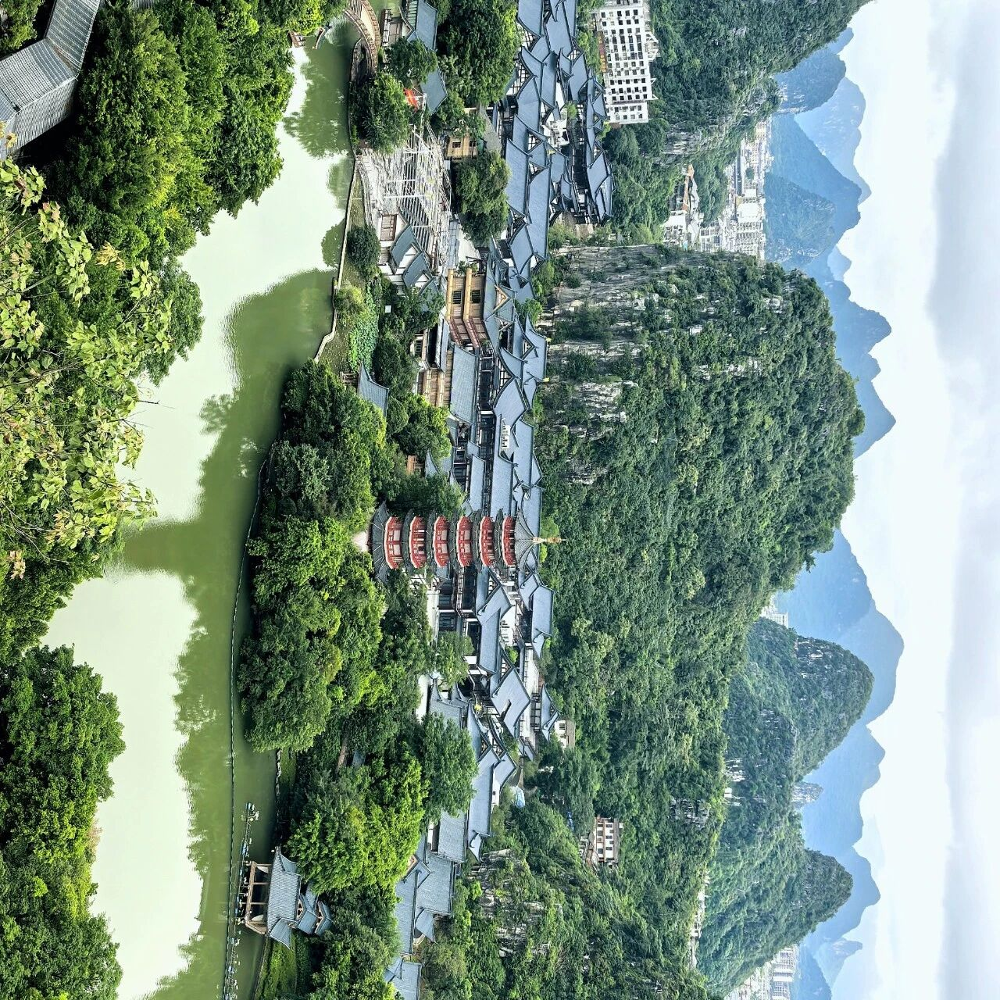

Diecai Mountain, Guilin, China: Best Li River Viewpoint
桂林叠彩山看全城与漓江美
Last updated: July 2026

I'd lived in Guilin for years before I finally climbed Diecai Mountain. Not for any good reason — it's right there, in the city, by the river, and it isn't even tall. I just kept putting it off. Then one morning after a heavy night of rain, the air turned cool and clear, so I went up around 11 a.m. The path and the summit were almost empty. That's the thing about the easy mountains in your own backyard: everybody else ignores them too.
What "Diecai" Actually Means
The name translates roughly to "piled silk" or "piled colors." Climb a little and you'll see why — the limestone here is layered in bands of gray, ochre, and rust, like folded brocade pressed into the hillside. It's a small detail, but it's the kind of thing that makes a place feel named by someone who actually looked.
The Climb (Yes, It Barely Counts as One)
Diecai Mountain's main peak, Mingyue Peak, sits a bit above 220 meters above sea level. From the base it's maybe a ten-minute walk up well-built steps, not a hike. You pass the Wind Cave (风洞) on the way — a gap in the rock where the air moves even on still days — and a few pavilions tucked into the stone. On a quiet weekday morning you'll have most of it to yourself.
What You Actually See From the Top
This is the payoff, and it's why the climb is worth ten minutes of your life. Stand at the Cloud-Snatching Pavilion (拿云亭) at the summit and the whole layout of Guilin opens up: the city sprawl flat between karst peaks, the Li River swinging past the foot of the hill, a handful of other city mountains — Fubo Hill, Elephant Trunk Hill — poking up downriver. After rain the river runs a little murky, but it doesn't lose the poetry. A couplet carved near the top says it best: "Thousands of peaks rise around the wilds; one river embraces the city." That isn't tourism copy. That's just the view.
Why Go on a Quiet Morning
The account I'm drawing on was written by a local who climbed after rain on a weekday and met almost no one. That's the move. Weekends and holidays bring tour groups; a cool morning after weather is when the mountain is yours. Bring water, wear real shoes for the steps, and give yourself half an hour up top, not five minutes.
Practical: Getting There
Diecai Mountain sits in the north of central Guilin, a short taxi or bus ride from the riverfront drag. It's usually rolled into the city's combined ticket that also covers Fubo Hill and other urban peaks, so check whether a joint ticket saves you money. The mountain stays open through the day; mornings are cooler and emptier, especially in summer.
If You Want More Guilin
Diecai Mountain is the quick hit, but Guilin rewards a longer stay — the Li River down to Yangshuo, the rice terraces at Longsheng, the food. If you want the full sweep of the province, start with our Guangxi travel guide, or jump back to the Guangxi overview.
Produced by Deep in China — Go deeper than any tourist ever goes.